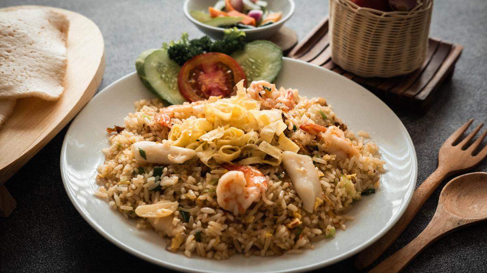

Nasi goreng is often referred to as the Indonesian version of fried rice. Although it is considered to be the national dish of Indonesia, it is also commonly eaten in Malaysia and Singapore. It is believed that the tradition of frying rice in Indonesia came from the Chinese culture, when the trade between the two countries started to develop.
Meal prep time : 30 minutes
Servings : 1